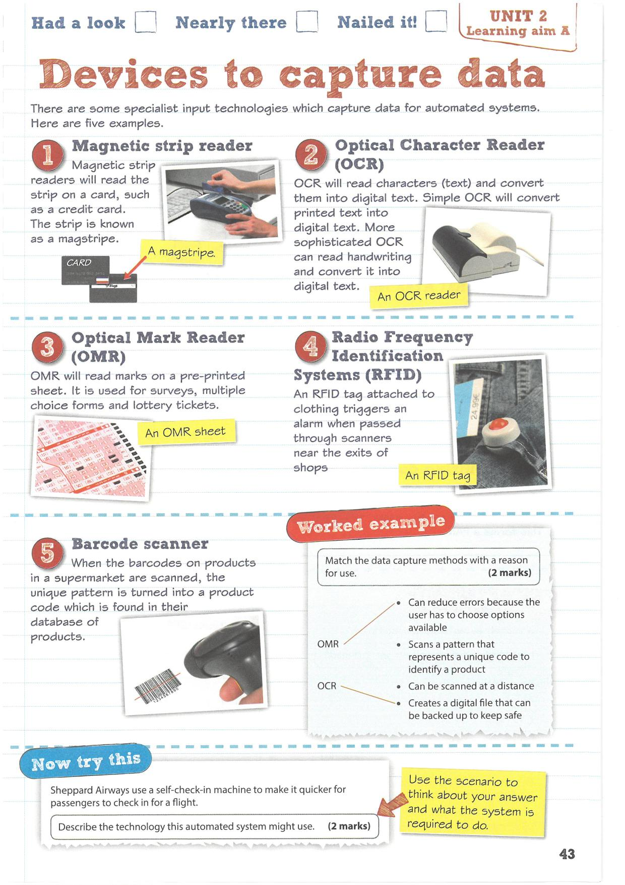

---
redirect_from:
  - "/aima/a08"
title: |-
  Devices to capture data
pagenum: 9
prev_page:
  url: /aimA/A07.html
next_page:
  url: /aimA/A09.html
suffix: .md
search: devices capture data images jpg

comment: "***PROGRAMMATICALLY GENERATED, DO NOT EDIT. SEE ORIGINAL FILES IN /content***"
---

    <main class="jupyter-page">
    <div id="page-info"><div id="page-title">Devices to capture data</div>
</div>
    <div class="jb_cell">

<div class="cell border-box-sizing text_cell rendered"><div class="inner_cell">
<div class="text_cell_render border-box-sizing rendered_html">
<p></p>

</div>
</div>
</div>
</div>

 


    </main>
    